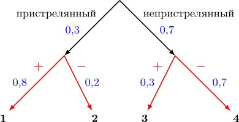
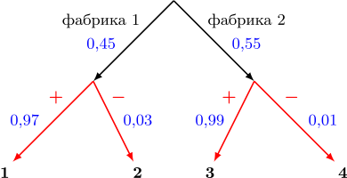
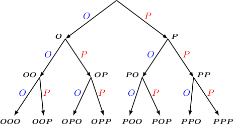

Этот сайт поможет подготовиться к задачам на вероятность в ЕГЭ по математике (Задания №4, №5, №6). Здесь собрана теория по основным типам задач, разобраны примеры и объяснены способы решения. Изучайте материал шаг за шагом и разбирайте решения — так вы сможете увереннее справляться с заданиями на вероятность.
Все материалы взяты с сайта ШКОЛКОВО. Все права принадлежат автору.
Во всех задачах на теорию вероятностей мы имеем дело с некоторым случайным экспериментом. Бросок кубика, вытаскивание шариков из коробки вслепую, вытягивание билета на экзамене, все это — случайные эксперименты.
Случайный эксперимент — это любой эксперимент или событие из реальной жизни, результат которого невозможно точно предсказать.
Реализация случайного эксперимента приводит к одному из элементарных исходов. Множество всех элементарных исходов случайного эксперимента называют пространством элементарных исходов .
Например, при броске обычного шестигранного кубика возможны шесть элементарных исходов: выпало 1 очко, выпало 2 очка, …, выпало 6 очков. Вероятностным пространством будет множество {1;2;3;4;5;6} . Пока мы будем рассматривать эксперименты с конечным числом элементарных исходов.
Каждому элементарному исходу соответствует некоторое неотрицательное число — вероятность его возникновения. Сумма вероятностей всех элементарных исходов случайного эксперимента должна равняться 1.
Так, если в примере с кубиком все значения выпадают равновероятно, то вероятности всех шести элементарных исходов равны между собой и по определению вероятности в сумме дают 1, значит,
Далеко не во всех случайных экспериментах элементарные исходы равновероятны!
Событием называют любое подмножество пространства элементарных исходов.
При броске кубика событию (в житейском понимании этого слова) «выпало четное количество очков» соответствует подмножество {2;4;6} вероятностного пространства {1;2;3;4;5;6}.
События называют несовместными, если у них нет ни одного общего элементарного исхода.
События «выпало четное число очков» и «выпало нечетное число очков» несовместны, ведь им соответствуют множества {2;4;6} и {1;3;5}, пересечение которых пусто.
Напротив, события «выпало четное число очков» и «выпало число очков, кратное 3» не являются несовместными, так как соответствующие им множества {2;4;6} и {3;6} имеют общий элементарный исход — выпадение шестерки.
Важно! Из определения очевидно следует, что любые два различных элементарных исхода несовместны.
Если события A и B несовместны, то вероятность того, что произойдет хотя бы одно из них, равна сумме их вероятностей. Так как мы знаем, что A и B — это на самом деле множества, а формулировка «хотя бы одно» означает их объединение, можем записать этот факт следующим образом:
В частности, получаем, что вероятность события равна сумме вероятностей всех элементарных исходов, из которых оно состоит, так как они все между собой несовместны.
Далее решим несколько задач, применив сформулированный факт на практике.
1. На экзамене по геометрии школьник отвечает на один вопрос из списка экзаменационных вопросов. Вероятность того, что это вопрос по теме «Тригонометрия», равна 0,1. Вероятность того, что это вопрос по теме «Внешние углы», равна 0,15. Вопросов, которые одновременно относятся к этим двум темам, нет. Найдите вероятность того, что на экзамене школьнику достанется вопрос по одной из этих двух тем.
Ответ. 0,25
Решение. Пусть событие A — это получение вопроса по тригометрии, а событие B — получение вопроса по внешним углам. В условии сказано, что нет вопросов, относящихся к обеим темам сразу, следовательно, события A и B несовместны, и вероятность того, что произойдет хотя бы одно из них, равна сумме их вероятностей. Тогда
2. В торговом центре два одинаковых автомата продают кофе. Вероятность того, что к концу дня в автомате закончится кофе, равна 0,3. Вероятность того, что кофе закончится в обоих автоматах, равна 0,12. Найдите вероятность того, что к концу дня кофе останется в обоих автоматах.
Ответ. 0,52
Решение. В конце дня могло возникнуть четыре различных ситуации:
Это и есть ни что иное, как наши четыре элементарных исхода. По условию для каждого автомата по отдельности вероятность того, что в нем закончится кофе, равна 0,3. Значит, событию «кофе закончился в первом автомате», которое состоит из элементарных исходов {(−+ );(−− )}, соответствует вероятность 0,3. Событию «кофе закончился в обоих автоматах» соответствует ровно один элементарный исход (−− ). Тогда
По аналогичным соображениям
Теперь легко найти вероятность интересующего нас элементарного исхода «кофе остался в обоих автоматах», то есть исхода (++ ).
1. Игральную кость бросили два раза. Известно, что два очка не выпали ни разу. Найдите при этом условии вероятность события «сумма выпавших очков окажется равна 4».
Ответ. 0,08
Рассмотрим все возможные элементарные исходы в эксперименте с броском двух кубиков. Это всевозможные пары натуральных чисел, где первое число пары — число очков, выпавших на первом кубике, второе число пары — число очков, выпавших на втором кубике. Каждое число пары может принимать одно из шести значений {1;2;3;4;5;6}. Тогда общее количество элементарных исходов равно 6 ⋅ 6 = 36, причем все они равновероятны.
Нам известно, что два очка не выпало ни разу. Это условие погружает нас в новое пространство элементарных исходов, меньшее, чем изначальное, в котором больше нет исходов с двойкой — они нереализуемы.
Элементарные исходы с двойкой:
Их всего 11, тогда в новом пространстве всего 36− 11= 25 элементарных исходов. Найдем все элементарные исходы нового пространства, в которых сумма очков равна 4 — это только исходы (1;3) и (3;1), ведь исхода (2;2) нет в нашем новом пространстве. Все исходы нового пространства также равновероятны, тогда вероятность события {(1;3);(3;1)} «сумма выпавших очков окажется равна 4» равна отношению числа элементарных исходов в нем к общему количеству элементарных исходов, то есть
Условной вероятностью события A при условии события B называют отношение вероятности того, что события A и B произошли одновременно, и вероятности события B. Здесь, конечно, вероятность B должна быть больше нуля. В виде формулы:
Пусть событие A — «сумма выпавших очков окажется равна 4», ему соответствует множество {(1;3);(2;2);(3;1)} элементарных исходов. Событие B — «два очка не выпали ни разу», ему соответствует множество всех элементарных исходов пространства, кроме тех, которые содержат 2, в первом решении мы посчитали, что таких исходов 25. По определению условной вероятности
Событие A ∩ B содержит все исходы события A, кроме тех, в которых есть 2, то есть A ∩ B = {(1;3);(3;1)}. Так как элементарные исходы в нашей задаче равновероятны, получим
Тогда
2. Первый игральный кубик обычный, а на гранях второго кубика нет нечетных чисел, а четные числа 2, 4 и 6 встречаются по два раза. В остальном кубики одинаковые. Один случайно выбранный кубик бросают два раза. Известно, что в каком-то порядке выпали 4 и 6 очков. Какова вероятность того, что бросали первый кубик?
Ответ. 0,2
Решение. Выпишем все исходы, когда выпали 4 и 6 очков в некотором порядке. Остальные исходы нас не интересуют, ведь из условия известно, что событие «в каком-то порядке выпали 4 и 6 очков» уже произошло, и мы погружаемся в новое пространство элементарных исходов. В случае, если был выбран первый кубик, таких исходов всего два: (4;6) и (6;4). В случае, если был выбран второй кубик, таких исходов восемь: (41;61), (41;62), (42;61), (42;62), (61;41), (61;42), (62;41), (62;42). Индексами показано, что на втором кубике есть две шестерки и две четверки.
Все 10 перечисленных исходов равновероятны, среди них 2 соответствуют выбору первого кубика, значит, искомая вероятность равна
1. Ковбой Джон попадает в муху на стене с вероятностью 0,8, если стреляет из пристрелянного револьвера. Если Джон стреляет из непристрелянного револьвера, то он попадает в муху с вероятностью 0,3. На столе лежат 10 револьверов, из них только 3 пристрелянные. Ковбой Джон видит на стене муху, наудачу хватает первый попавшийся револьвер и стреляет в муху. Найдите вероятность того, что Джон промахнется.
Ответ. 0,55
Решение 1. Изобразим все возможные последовательности событий с помощью дерева.

Всего возможны четыре элементарных исхода:
Нам нужно найти вероятность события, что Джон промахнется, оно содержит элементарные исходы 2 и 4. Из 10 револьверов 3 пристрелянные, значит, Джон схватит пристрелянный с вероятностью 0,3, а непристрелянный с вероятностью 0,7.
Найдем вероятность исхода 2. Она равна произведению вероятностей на всех стрелках на пути к исходу 2, то есть
По аналогичным соображениям вероятность исхода 4 равна
Тогда вероятность события, что Джон промахнется, равна сумме вероятностей элементарных исходов, составляющих это событие:
Решение 2 через теорему об умножении вероятностей.
Преобразовав формулу условной вероятности для событий A и B, где P(B) ≠ 0, получи
Обозначим через A событие «Джон схватил пристрелянный пистолет», через Ā — «Джон схватил непристрелянный пистолет», через B — «Джон попал», через B̄ — Джон не попал.
В первом решении мы объяснили, что P(A)= 0,3, P (Ā)= 0,7. Нам нужно найти вероятность события B̄, его можно представить как объединение несовместных событий (B̄ ∩ A) ∪ (B̄ ∩ Ā) , ведь когда Джон промахнулся, он стрелял либо из пристрелянного, либо из непристрелянного револьвера, других вариантов нет.
Найдем вероятность события B̄ ∩ A, учитывая, что по условию вероятность P(B̄|A), то есть промаха из пристрелянного, равна 1 − 0,8= 0,2.
Найдем вероятность события B̄ ∩ Ā, учитывая, что по условию вероятность P(B̄|Ā) , то есть промаха из непристрелянного, равна 1− 0,3 = 0,7.
Суммируя полученные вероятности, получаем, что Джон промахнется с вероятностью
2. Две фабрики выпускают одинаковые стекла для автомобильных фар. Первая фабрика выпускает 45% этих стекол, вторая — 55%. Первая фабрика выпускает 3% бракованных стекол, а вторая — 1%. Найдите вероятность того, что случайно купленное в магазине стекло окажется бракованным.
Ответ. 0,019
Решение. Нарисуем дерево, как в предыдущей задаче.

Нас интересуют исходы 2 и 4, когда стекло бракованное. Мы уже знаем, что вдоль цепочки событий вероятности можно умножать.
Вероятность исхода 2 равна
Вероятность исхода 4 равна
Тогда вероятность того, что случайно купленное стекло — бракованное, равна сумме вероятностей исходов 2 и 4:
3. В коробке 11 синих, 6 красных и 8 зеленых фломастеров. Случайным образом выбирают два фломастера. Какова вероятность того, что окажутся выбраны один синий и один красный фломастеры?
Ответ. 0,22
Решение. Из всех возможных элементарных исходов нам подходят два:
Всего фломастеров 25. Вероятность первым взять красный равна 6⁄25, так как мы выбираем фломастеры равновероятно. Вероятность взять синий при условии, что один красный уже взят, равна 11⁄24, потому что из оставшихся 24 фломастеров ровно 11 синих. Тогда вероятность цепочки равна
Вероятность первым взять синий равна 11⁄25. Вероятность взять красный при условии, что один синий уже взят, равна 6⁄24 , потому что из оставшихся 24 фломастеров 6 красных. Тогда вероятность цепочки
Складывая вероятности этих элементарных исходов, получаем вероятность 0,22 того, что синий и красный фломастеры взяты в произвольном порядке.
События A и B называются независимыми, если вероятность одного из них не зависит от исхода другого, то есть обычная вероятность P(A) события A равна условной вероятности P(A|B) и аналогично P(B) = P(B|A). Если в теорему об умножении вероятностей
подставить P(A|B) = P(A), то получим классическое определение независимых событий.
События A и B называются независимыми тогда и только тогда, когда
Фактически независимость в условии задачи позволяет нам напрямую перемножать вероятности событий, чтобы получить вероятность их пересечения, не находя условную вероятность. Классические примеры независимых событий, где независимость негласно подразумевается, это: последовательные броски кубика (вероятности выпадения чисел в каждом следующем броске не зависят от результатов предыдущих бросков), многократные подбрасывания монетки, да и многие другие одинаковые действия, повторенные несколько раз.
1. трелок в тире стреляет по мишени до тех пор, пока не попадет в нее. Вероятность попадания при каждом отдельном выстреле равна 0,6. Найдите вероятность того, что стрелку потребуется ровно три попытки.
Ответ. 0,096
Решение. Чтобы стрелок сделал ровно три попытки, он должен промахнуться первые два раза и попасть на третий. Вероятность промахнуться равна
Получаем, что вероятность попасть в мишень именно на третий раз равна
Мы можем перемножать веротности, потому что в условии сказано, что вероятность попадания при каждом отдельном выстреле равна 0,6, то есть не зависит от результатов других выстрелов.
Рассмотрим ситуацию, когда все элементарные исходы некоторого случайного эксперимента равновероятны и всего их n штук. Допустим, что в задаче нас просят найти вероятность некоторого события A = {a1,...,ak}, состоящего из k элементарных исходов. Тогда
Получается, что в этом случае от задачи по теории вероятностей мы переходим к задаче по комбинаторике: нам нужно лишь подсчитать количество благоприятных исходов, общее количество исходов и найти их отношение.
Представим следующую ситуацию: 5 школьников пришли в столовую за сосисками в тесте. Сколькими различными способами они могли выстроиться в очередь? Пронумеруем позиции в очереди от 1 до 5. Тогда количество вариантов выбрать школьника на первую позицию равно пяти, на вторую — четырем, так как один из школьников уже на первой позиции, на третью — трем, на четвертую — двум, на последнюю пятую позицию отправляется единственный оставшийся школьник. Каждому варианту для одной позиции могут соответствовать все возможные комбинации вариантов на остальных позициях, значит, чтобы получить общее количество комбинаций, нужно перемножить варианты на всех позициях:
В общем случае количество различных перестановок из n элементов равно n!.
Теперь нам нужно из 7 человек выбрать двоих для дежурства на перемене. Будем выбирать их по очереди, сначала первого дежурного, потом второго. Первого можно выбрать семью способами, для каждого из способов выбрать первого есть шесть способов выбрать второго, получаем, что общее количество способов выбрать двоих дежурных равно 42. Что же не так в этом рассуждении? Среди этих 42 способов мы один раз посчитали способ, когда мы первым выбрали Петю, а вторым — Васю, а также способ, когда мы первым выбрали Васю, а Петю — вторым. В реальности же нет разницы между парами дежурных Петя-Вася и Вася-Петя. Значит, искомое количество способов вдвое меньше, чем мы получили, так как каждую пару мы посчитали дважды, и правильный ответ — 21.
Заметим, что если бы мы выбирали одного дежурного в столовую, а второго в коридор, то наш изначальный результат был бы верным. Ведь способы «Васю в коридор, Петю в столовую» и «Васю в столовую, Петю в коридор» действительно различны.
Рассмотрим более сложную ситуацию. Теперь из 7 человек нужно выбрать троих для дежурства. Мы уже понимаем, что если просто перемножить 7 ⋅ 6 ⋅ 5= 210, то некоторые варианты окажутся посчитаны больше одного раза. Попробуем разобраться, сколько раз будет посчитан каждый вариант.
Рассмотрим троих людей Васю, Петю и Колю. Тогда среди 210 вариантов мы посчитали варианты
В реальности все эти шесть вариантов не отличаются, ведь мы просто выбрали дежурными Васю, Петю и Колю, неважно в каком порядке. Теперь становится понятно, что каждый вариант мы вместо одного раза посчитали 6 =3! раз, то есть делить нужно на количество различных перестановок, ведь именно столько раз мы посчитали каждый вариант. Таким образом, ответ
Посчитаем теперь количество способов выбрать четырех дежурных из тех же самых соображений:
Получили, что количество способов выбрать четверых равно количеству способов выбрать троих. Действительно, ведь выбрать четверых это то же самое, что выбрать троих, которые не будут выбраны.
Посчитаем количество способов выбрать 9 человек из 11. Вместо того, чтобы выбирать 9 дежурных, выберем 2 недежурных. Проверим, что результаты при двух способах подсчета совпадут:
1. В группе туристов 12 человек. С помощью жребия они выбирают трех человек, которые должны идти в село в магазин за продуктами. Какова вероятность того, что турист Д., входящий в состав группы, пойдет в магазин?
Ответ. 0,25
Решение. Посчитаем число «благоприятных» исходов, в которых Д. отправляется в магазин. Оно равно числу способов выбрать ему двух компаньонов из оставшихся 11 человек, то есть
Общее число способов выбрать троих человек из 11 равно
Искомая вероятность равна отношению количества благоприятных исходов к общему числу исходов, то есть
2. Пин-код на телефоне — случайная комбинация из четырех цифр. Какова вероятность того, что пин-код будет содержать ровно три различных цифры?
Ответ. 0,432
Решение. Каждая из четырех цифр может принимать одно из десяти значений, следовательно, общее число комбинаций равно 104.
Посчитаем количество благоприятных исходов. Если пин-код содержит три различные цифры, это значит, что какие-то две цифры одинаковые, а оставшиеся две отличаются и между собой, и от первых двух. Сначала выберем две позиции, на которых будут стоять две одинаковые цифры.
Количество способов выбрать две позиции из четырех равно (4⋅2) ÷ 3 = 6 (порядок нам неважен, ведь там будут стоять одинаковые цифры). Мы выбрали две позиции, где будут одинаковые цифры. Теперь у нас есть 10 способов выбрать цифру, которая встречается дважды, 9 способов выбрать одну из двух разных цифр и 8 способов выбрать последнюю цифру. Перемножив, получим 6 ⋅ 10 ⋅ 9 ⋅ 8 комбинаций. Поделив на общее число исходов, получим искомую вероятность
Рассмотрим классическую ситуацию: симметричная монетка подбрасывается 3 раза, необходимо посчитать количество возможных комбинаций орлов и решек, которые могут выпасть. На каждом броске мы можем получить либо орла, либо решку. Нарисуем ситуацию в виде дерева.

На первом уровне дерева находятся все комбинации для одного броска (всего 21 = 2 варианта), на втором — для двух (всего 22 = 4 варианта), на третьем — для трех (всего 23 =8 вариантов).
Количество комбинаций на каждом следующем уровне дерева увеличивается двое. Действительно, ведь каждый следующий бросок «раздваивает» каждую из существующих комбинаций. Дерево можно продолжать дальше вниз и для произвольного количества n бросков количество возможных комбинаций будет равняться 2ⁿ .
3. Симметричную монетку подбрасывают 10 раз. Найдите вероятность того, что выпало ровно 2 орла. Ответ округлите до тысячных.
Ответ. 0,044
Решение. Общее количество возможных комбинаций при 10 подбрасываниях монетки равно 210 .
Найдем количество благоприятных исходов. В благоприятном исходе ровно в двух подбрасываниях из 10 выпал орел, в остальных — решки, значит, количество благоприятных исходов равно количеству способов выбрать два подбрасывания из 10, в которых выпали орлы, порядок нам не важен, потому что орлы одинаковые. Мы уже считали подобное, поделив количество благоприятных исходов на общее число исходов, получим
Поделим в столбик и округлим до тысячных:
Теперь вместо подбрасывания монетки совершается несколько бросков кубика. Сколько же комбинаций очков может выпасть если совершено два броска? три броска? Эту ситуацию можно снова смоделировать с помощью дерева, только теперь из каждой вершинки, соответствующей комбинации, будет вести уже шесть ребер. Таким образом, с каждым следующим броском количество комбинаций будет увеличиваться в 6 раз, и ответ для двух бросков 62, а для трех — 63.
Попробуем взглянуть на ситуацию немного иначе. Пусть каждому из трех бросков соответствует одна из трех позиций:
_ _ _
Тогда на каждой из трех позиций может оказаться одно из чисел от 1 до 6 — результат соответствующего броска. Для каждой позиции напишем количество вариантов очков. Каждому варианту для одной позиции могут соответствовать все возможные комбинации вариантов на остальных позициях, значит, чтобы получить общее количество комбинаций, нужно перемножить варианты на всех позициях:
4. Егор трижды подбрасывает правильную игральную кость. Какова вероятность того, что за эти три подбрасывания ровно один раз выпадет число, кратное трём? Ответ округлите до сотых.
Ответ. 0,44
Решение. Общее количество возможных комбинаций при 3 подбрасываниях игральной кости равно 63 =216.
Найдем количество благоприятных исходов. В благоприятном исходе ровно в двух подбрасываниях из трех выпало одно из чисел {1;2;4;5}, в третьем — одно из числе {3;6}. Значит, количество благоприятных исходов равно количеству способов выбрать одно подбрасывание из трех, в котором выпало число, кратное 3, умноженному на количество вариантов в каждом из подбрасываний. Таким образом, количество благоприятных исходов равно
Поделив количество благоприятных исходов на общее число исходов и округлив ответ до сотых, получим